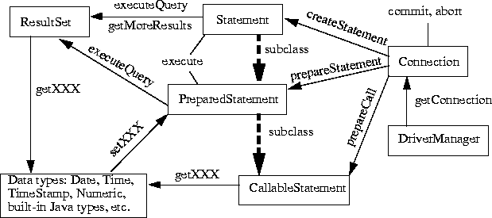

13 JDBC Interface Definitions
See the separate JDBC API documentation which contains the Java definitions of the core java.sql
interfaces and classes listed below.
java.sql.CallableStatement
java.sql.Connection
java.sql.DataTruncation
java.sql.Date
java.sql.Driver
java.sql.DriverManager
java.sql.DriverPropertyInfo
java.sql.PreparedStatement
java.sql.ResultSet
java.sql.SQLException
java.sql.SQLWarning
java.sql.Statement
java.sql.Time
java.sql.Timestamp
java.sql.Types
The JDBC API documentation also includes definitions of the JDBC metadata interfaces - java.sql.DatabaseMetaData
and java.sql.ResultSetMetaData. See also the short example programs in
Appendix B.
The more important relationships between the interfaces are as follows (with arrows showing functions
and lines showing other methods)

:
Contents | Prev | Next
jdbc@wombat.eng.sun.com
or
jdbc-odbc@wombat.eng.sun.com
Copyright © 1996, 1997 Sun Microsystems, Inc. All rights reserved.